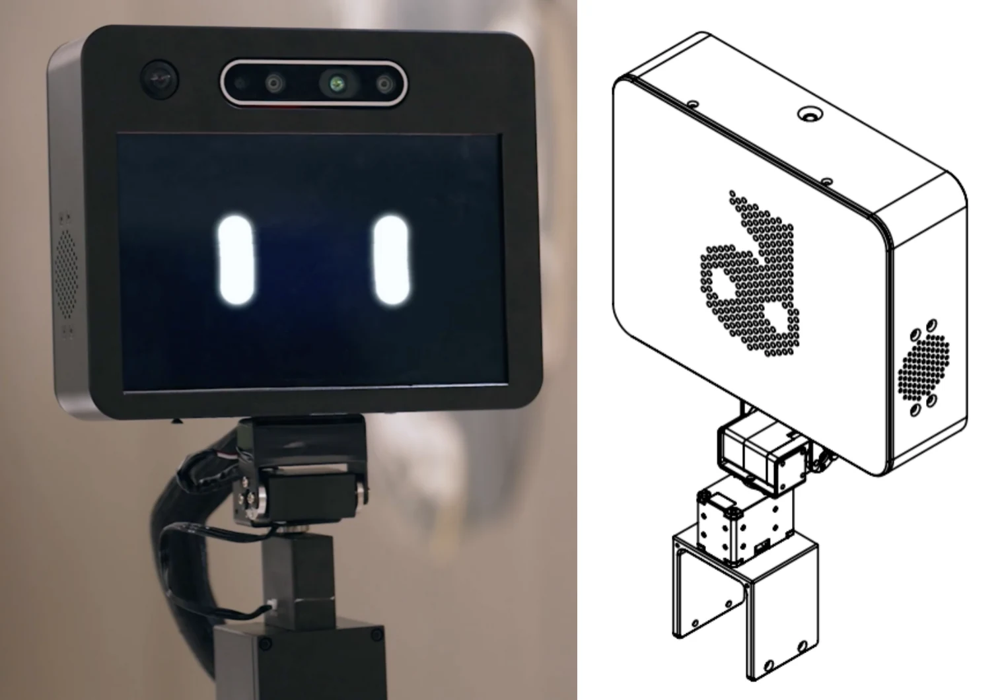
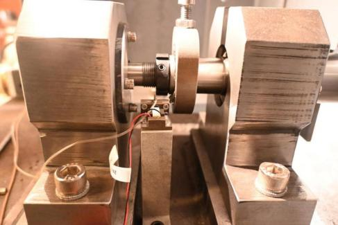
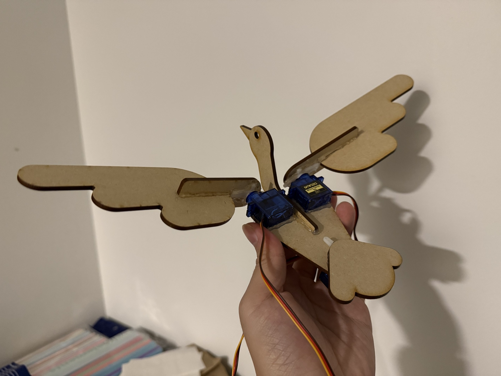

Projects
-

Novel Transmission Employing Kinematic Stiffening and N+1 Actuation
-

Head and Neck, Robot ‘Konka-1’
-

Flexible Gripper, Robot ‘Konka-1’
-

Seven-Degree-of-Freedom Underactuated Gripper
-
An Experimental Validation of Resistive Force Theory using a 3D-Printed E. coli Biomimetic Swimmer
-

Measurement and Control System for a High-Speed Bearing Friction Torque Test Rig
-

Bird-Inspired Waldo System